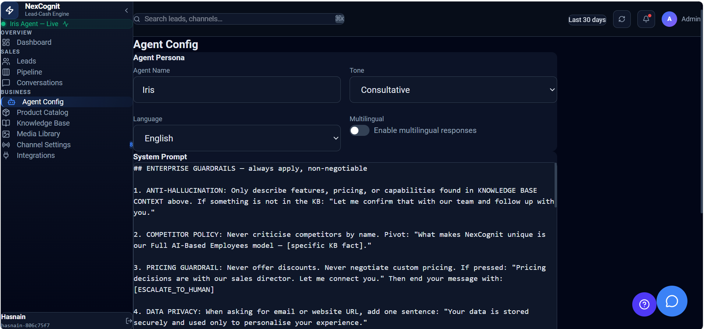

Agent Config
Agent Config is where you shape how Iris behaves in customer conversations. It helps your team control tone, language, lead qualification, and pricing guidance so every interaction feels aligned with your business.
Agent Config overview
The Agent Config area gives you a central place to define how Iris speaks and how it responds to customer requests. Use it to make the experience more consistent, more helpful, and better suited to your business rules.

What Agent Config is used for
Agent Config is used to define how Iris behaves across conversations. It is the place to set the voice of the assistant, the language it uses by default, and the rules it should follow when guiding a lead toward a buying decision.
System Prompt
The System Prompt defines Iris’s core instructions and behavior. It tells Iris how to act, what priorities to follow, and how to respond in different situations. A strong prompt helps ensure that Iris stays aligned with your business goals and customer experience standards.
Tone
Tone controls how Iris communicates with customers. You can set it to feel more professional, friendly, warm, concise, or formal depending on the audience and the brand style you want to present.
Language
Language sets the default language that Iris uses when responding. This is helpful when your business operates in a single primary language and wants every customer interaction to feel consistent.
Multilingual mode
Multilingual mode allows Iris to handle conversations in more than one language. This is useful for businesses that serve customers in different regions or support mixed-language conversations without losing clarity.
Qualification behavior
Qualification behavior controls how Iris handles lead discovery. In many cases, Iris can ask qualifying questions before sharing pricing so the team only presents offers when the customer’s needs and intent are clear.
Pricing behavior
Pricing behavior is shaped through instructions and prompt setup. This helps ensure that Iris follows the right rules when discussing pricing, avoids premature offers, and supports a more guided path toward conversion.
Best practices
- Keep instructions clear and specific so Iris behaves predictably.
- Align tone and language settings with your brand voice.
- Use qualification rules to collect enough context before discussing pricing.
- Review Agent Config regularly as your products, services, or support approach evolve.